知る
来歴（医王寺について）
当山は国宝山甘露院医王寺といい、本尊は薬師如来で開基は宝永年間 に当地の一村民によって開創されたと伝えられています。
当時村内に流行する難病が多いことを憂い、平癒祈願のため観音像をまつったと云われています。
元文2年(1737年) に府中安養寺の末寺となりました。その後大正12年 (1921年) 2月25日の大火により本堂をはじめ総てを焼失、 古文
書などもことごとく失ったため、由緒は不詳です。昭和52年3月都道拡張計画のため現在の台地に移転しました。
-
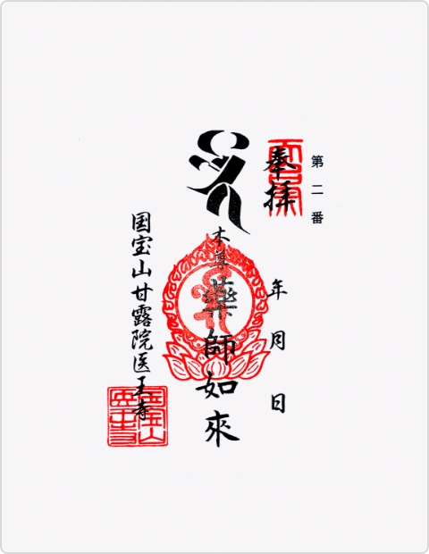
玉川三十四観音霊場第23 番札所 関東九十一薬師霊場第２番札所
後詠歌
おおまるのかんろのしみずありがたや
まつのはしごのよとがわのてら -
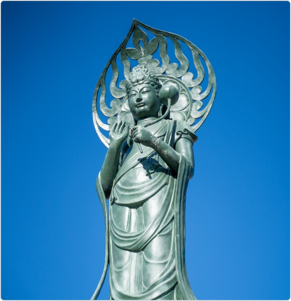
聖觀世音菩薩
観音さま、と親しまれている観世音菩薩の名は、観ることの自在な者 を意味します。 観世音とは一切を観察することが自在であるように、衆生を観察して自在に大慈悲をもたらして、これを救う菩薩という意味です。
観音霊場三十三ヶ所霊場巡りは古く(988年)からあり、形は違えども現世利益の仏さまとしての信仰には変りありません。観音さまには六観音、二十五観音、三十三観音と多くの観音さまがあり ますが、これらの多種多様な観音さまは、おのおの独自の姿をされていますが、それらのお姿は観音さまの慈悲が広大無辺であ ることを示しています。
-
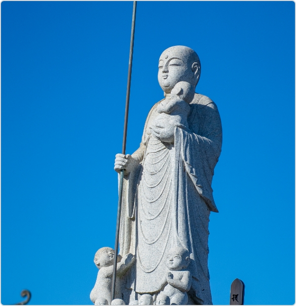
水子地蔵
お地蔵さまは柔和な僧形をしていることから子供の守護仏と信じられ、子安 地蔵、子育地蔵、水子地蔵などの信仰が盛んです。地蔵像は、しばしば子供の 姿で造られるようになり、赤いよだれ掛けをつける風習が広がりました。
お地蔵さまは、人びとの願いごとを聞き災厄病苦などを本人に代って身に受け、困難に直面している者の前に現われ、その苦しみを救うといわれています。特にこの世に生れることなく死んでいった嬰子や両親のうでにいだかれることなく逝った嬰子をご慈悲をもって救うとされています。当に自らを後にして他を救うという父母の愛そのものの菩薩なのです。
-
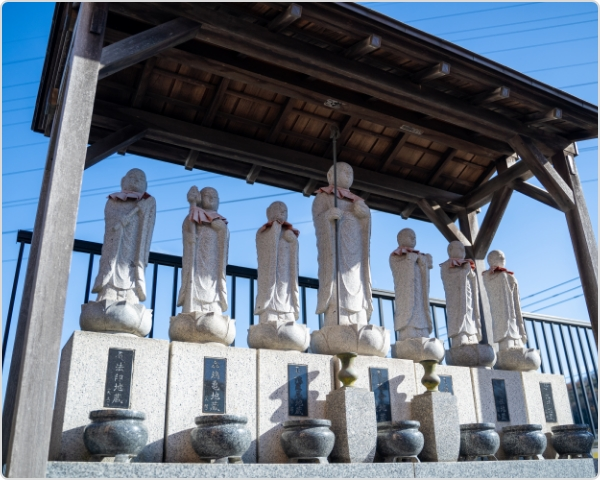
七地蔵
一般的にお寺の山門前や墓地前に六地蔵が安置されま す。 このお寺、この墓地に眠る全ての人をお救いいた だくためです。 地獄道から穏やかな天道まであります が、どの世界であっても救っていただけるという願いを込めお参りするのです。 当山ではこの六地蔵の中心に「延命地蔵」がございます。皆様が救われ健康長寿となることを願うものです。山門をくぐる前に、まず七地蔵に手を合わせ日々安穏をお願いしてください。
-
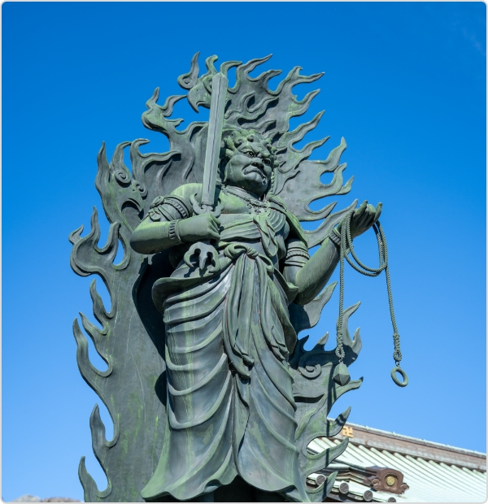
大丸不動尊
不動明王は仏教の信仰対象であり、密教特有の尊格である明王の一尊。大日如来の化身ともいわれ、五大明王の中心となる明王です。
医王寺の大丸不動尊は総高二丈三尺（本体が約7.5 メートル、台座を入れると約9メートル）の唐銅造立像となり、燃え盛る炎に包まれた迫力のある明王像です。 -
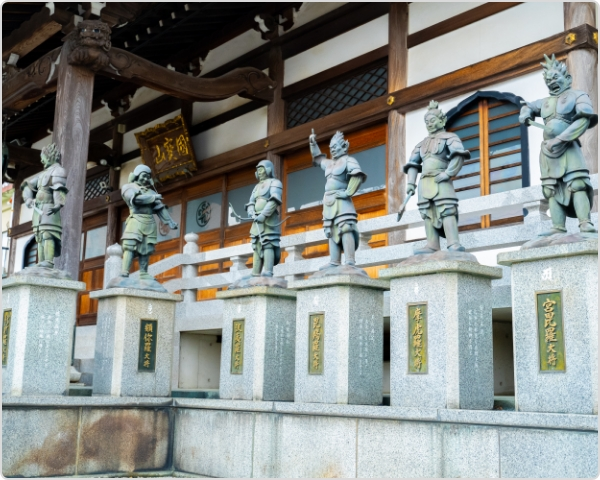
十二神将
十二神将は仏教における天部。十二薬叉大将、十二神王ともいい薬師如来および薬師経を信仰する者を信仰するものを守護するとされる十二尊です。
本尊が薬師如来なので、本殿の前に十二神将がいます。天界に住む神である十二神将は、薬師如来の十二の大願に応じる守り神です。 -
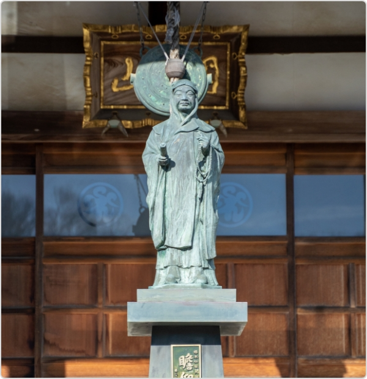
伝教大師像
伝教大師とは、天台宗開祖・最澄が、没後に天皇から授かった呼称です。
台座に刻まれた「贍仰崇信（せんごうすうしん）」とは、草木や山河も山川も人間と同じくらい大切で皆平等、命あるものは皆、自分以外の命によって生かされているという教えのことです。
天台宗とは
-
宗旨
天台宗（天台法華円宗）
-
総本山
滋賀県比叡山延暦寺
-
祖師
高祖（中国）天台
大師智顗禅師
宗祖（日本）伝教
大師最澄上人 -
立教開宗
中国の天台智顗大師が、お釈迦様御一代の教えのうち、最もすぐれた法華経を中心として天台宗をお開きになり、其の後伝教大師が中国に渡られ、これを伝えて、延暦二十五年一月二十六日、日本の天台宗を開かれ、日本仏教の根源となった宗旨であります。
天台宗はこの法華経にもとづく「一乗の教え」を根本として、密教、禅法、戒法、念仏などをその実践の法門としています。 -
本尊
天台宗のご本尊は、阿弥陀様、薬師様、観音様、地蔵様、不動様などをおまつりしてありますが、それらは皆、法華経に説かれている、「久遠実成の釈迦牟尼如来」（永遠のいのち、無限の力をそなえられた宇宙の本体としてのお釈迦様）と同一体であるから、すべての従ってこれらの仏、菩薩を敬信します。
-
教義
此の世のいろいろ異なったことがらは、すべてうつりゆく仮の相であるが、それはそのままに仏のいのち、すがたである。私共は皆仏の子として、仏と同じ仏性を生まれながらそなえているので、人々がこの理りにめざめて、仏の道にいそしみ、はげむように導くのが、天台宗の教えである。
-
経典
俗に「朝題目、夕念仏」とも称される如く、法華経の諸法実相（すべてのものは、みな仏そのもののあらわれである）の立場に立って、すべての大乗経典を敬い読誦致します。
年間行事
テキストテキストテキストテキストテキストテキストテキストテキストテキストテキストテキストテキストテキストテキストテキストテキストテキストテキスト
-
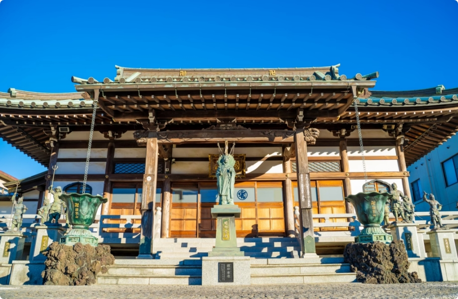
修正会 【1月1日 修行】
年の初めに、前年のできごとを悔い改め、新年の安穏を祈願します。
-
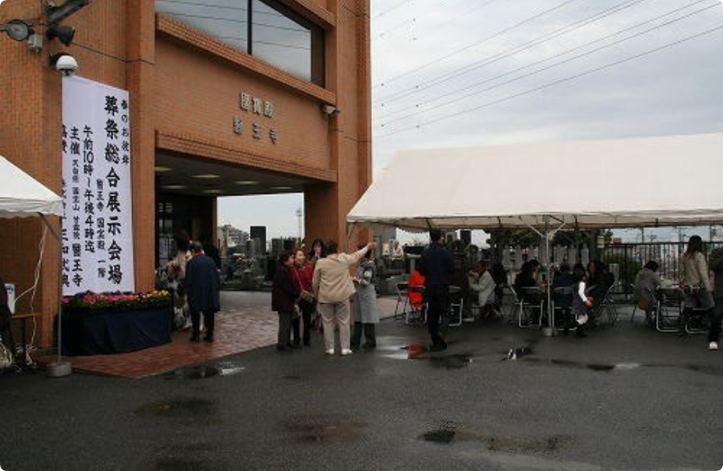
春彼岸会 【受付日は中日】
お彼岸は、こんにちではお墓まいりをして先祖を供養する行事となっています。 彼岸の中日が春分の日と秋分の日にあたるのは、昼と夜の長さが同じため、仏教の「中道」の教えにも通じるからといわれています。
-
仏生会 【4月8日】
「灌仏会」「花まつり」などといわれることもある行事です。釈迦誕生仏を安置し、その像に甘茶をそそいでお釈迦さまの誕生をお祝いします。
-
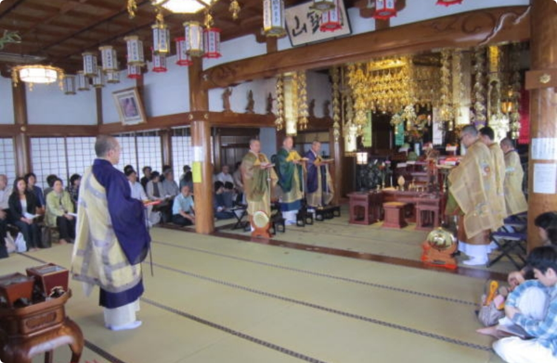
施餓鬼会 【5月18日】
施餓鬼会の由来
釈尊の弟子の阿難尊者（あなんそんじゃ）が修行をしていると、目の前に餓鬼が現われました。そして、「三日後、お前は我々と同じ餓鬼道（飢えと渇きに悩まされ、食べ物があっても口の前まで持ってきたところで燃えてしまうと言われている世界）に生まれかわるだろう。逃れたければ、餓鬼たちに飲食を施せ」と言われます。
お釈迦さまは阿難尊者に餓鬼の腹を満たす呪文を授けます。阿難尊者の施しに餓鬼たちは感謝し、阿難尊者も餓鬼道に生まれ変わることなく生涯をすごしました。 -
迎え盆法要 【7月13日・8月13日】
ご先祖さまを家にお迎えする行事を「迎え盆」といい、霊界へお送りする行事を「送り盆」といいます。精霊棚と精進のお膳をお供えし、茄子の牛と胡瓜の馬を作ります。くるときは馬に乗って早く、帰りは牛に乗ってゆっくりと、という思いが込められています。
また、ご先祖様が家をめざすときにわかるよう、迎え火を焚き、お盆の提灯を飾ります。
盆供養会・8月13日～16日（7月盆有） -
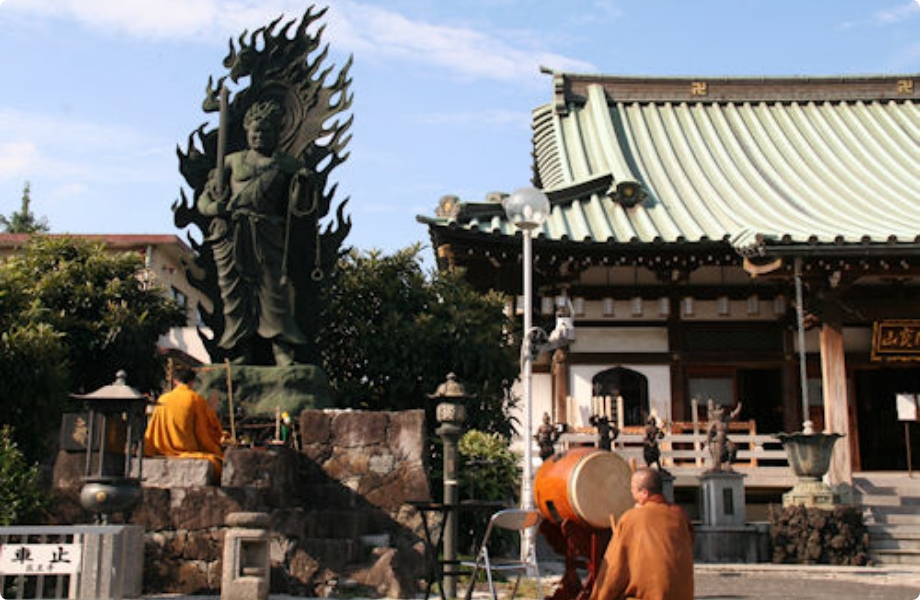
秋彼岸会 【受付日は中日】
お彼岸は、こんにちではお墓まいりをして先祖を供養する行事となっています。 彼岸の中日が春分の日と秋分の日にあたるのは、昼と夜の長さが同じため、仏教の「中道」の教えにも通じるからといわれています。
-
納めの護摩焚き
12月28日に、納めの不動護摩焚きをおこないました。
-
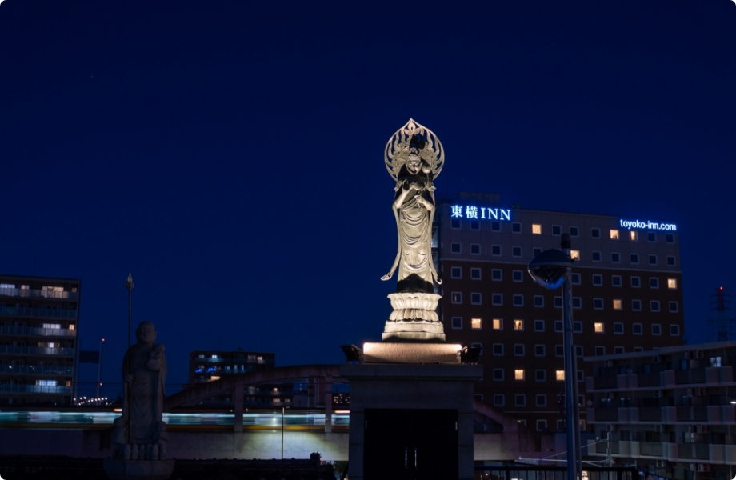
大晦日 【12月31日】
除夜とは大晦日の夜のことです。除夜の鐘の音を聞きながら、1年を振り返って反省します。